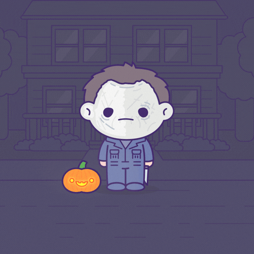

10 Fascinating Facts About Your Favorite Horror Movies
- The Exorcist was the first horror film to be nominated for a Best Picture Oscar.
- The horror genre has never gotten much love from the Academy. Though there still seems to be a bias against scary movies during awards season, The Exorcist earned 10 Oscar nominations in 1974, including a Best Supporting Actress nod for Linda Blair, who was just 15 years old at the time.
- Robert Englund was not the first choice to play Freddy Krueger.
- Wes Craven reportedly planned to have a stuntman play the seemingly immortal youth-hater known as Freddy Krueger, but (wisely) opted to go with an accomplished actor for the role instead. His first choice was the brilliant British character actor David Warner, who you'll no doubt recognize from Time Bandits, Titanic, and various incarnations of Star Trek. Warner had to pass on the project, which opened the door for the truly excellent Robert Englund.
- Serial killer Ed Gein inspired three major horror movies.
- You’ve likely heard of Ed Gein. His house of horrors made headlines for years after he was sent to a mental hospital for his actions. They were so memorable, in fact, that he inspired some of the most iconic thrillers of all time: Psycho, The Silence of the Lambs, and The Texas Chainsaw Massacre. Among the items discovered at his Plainfield, Wisconsin farm were four noses, nine masks made of human skin, numerous decapitated heads, lampshades and bowls made of skin, lips being used as a pull on a window shade, and a belt made from nipples. Gein later admitted to only two murders and said most of the items had come from late-night cemetery raids.
- A double amputee was used to create The Thing’s quintessential special effect.
- One of the most memorable scenes in John Carpenter's The Thing (often referred to as the “chest chomp”) occurs when Dr. Copper (Richard Dysart) attempts to revive Norris (Charles Hallahan) with a defibrillator. As he presses the paddles to his patient’s skin, Norris’ chest opens up and Copper’s forearms disappear into the cavity, where they are severed below the elbow by a set of jaws inside Norris’ chest. In order to pull this off, special makeup effects designer Rob Bottin (known for his work on RoboCop, Total Recall, Se7en, and Fight Club) found a man who had lost both of his arms below the elbow in an industrial accident. Bottin fit the man with two prosthetic forearms consisting of wax bones, rubber veins, and Jell-O. Then, for the wide-angle shot, he fit the man with a skin-like mask taken from a mold of Dysart’s face (à la Hannibal Lecter) and placed the ersatz arms into the chest cavity, where a set of mechanical jaws clamped down on them. As the actor pulled his arms away, the Jell-O arms severed below the elbows. The rest is practical effects history.
- Tim Burton was in contention to direct Gremlins.
- There was a lot of buzz surrounding Tim Burton after the success of his short film, Frankenweenie—so much so that Steven Spielberg considered him to direct Gremlins. But the fact that Burton had yet to direct a feature film worked against him, and the gig was given to Joe Dante. A year later, Burton released his first theatrical feature, Pee-wee’s Big Adventure.
- Child’s Play was inspired by a real event. (Yes, Child's Play.)
- In 1909, Key West painter and author Robert Eugene Otto claimed that one of his family's servants placed a voodoo curse on his childhood toy, Robert the Doll. Supposedly, the doll would mysteriously move from room to room, knock furniture over, and conduct conversations with Otto. Robert the Doll was left in the attic until Otto's death in 1974, when new owners moved into his Florida home. The new family also claimed mysterious activities would happen in the house connected to the doll. Today, Robert the Doll is on display at the Custom House and Old Post Office in Key West, Florida.
- Bruce Campbell made $93,000 for Army of Darkness.
- To illustrate the plight of the working stiff actor, Bruce Campbell once provided a helpful breakdown of his salary for 1992’s second Evil Dead sequel, Army of Darkness. With a $500,000 salary nipped at by agents, managers, income taxes, and a now-ex wife, he figured he made roughly $93,000. But the film took two years to complete, meaning his net profit for portraying horror icon Ash in a major motion picture was less than $50,000 a year.
- Steven Spielberg thought his DVD copy of Paranormal Activity was haunted.
- As the urban legend goes, Spielberg, whose DreamWorks Studios was considering distributing Paranormal Activity, took a DVD of the movie home to watch, but then got freaked out when the door to his bedroom locked by itself. “So the whole story about how the doors to his bedroom got locked from the inside ... personally I believe it,” Peli told Moviefone. “It’s not something the marketing department just came up with before releasing the movie.” Spielberg famously carried the DVD to work in a trash bag because he thought it was haunted. Despite the shock, Spielberg loved the movie and suggested a new ending that was used in the theatrical release.
- Buffalo Bill's dance in The Silence of the Lambs was not in the script.
- But it was in the original book, and Ted Levine, the actor who played the serial killer Jame Gumb, insisted that the scene be included because it helped explain the demented character better.
- Jaws originally ended just like Moby-Dick.
- The original ending in the script had the shark dying of harpoon injuries inflicted by Quint and Brody à la Moby-Dick, but Spielberg thought the movie needed a crowd-pleasing finale and came up with the exploding tank as seen in the final film. The dialogue and foreshadowing of the tank were then dropped in as they shot the movie.
The Thing (1982)
- A research team in Antarctica is hunted by a shape-shifting alien that assumes the appearance of its victims.
- Director: John Carpenter
- Writers: Bill Lancaster (screenplay), John W. Campbell Jr. (story)
Nightmare on Elm Street (1984)
- The monstrous spirit of a slain child murderer seeks revenge by invading the dreams of teenagers whose parents were responsible for his untimely death.
- Director: Wes Craven
- Writter: Wes Craven
Evil Dead (1981)
- Five friends travel to a cabin in the woods, where they unknowingly release flesh-possessing demons.
- Director: Sam Rami
- Writter: Sam Rami
